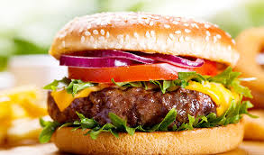

Hamburger
Duration: 20min
Ingredients
- ½ pounds of lean ground beef
- ½ onion, finely chopped
- ½ cup shredded Colby Jack or Cheddar cheese
- 1 large egg
- 1 ounce envelope dry onion soup mix
- 1 mincedclove garlic
- 1 tablespoon garlic powder
- 1 teaspoon soy sauce
- 1 teaspoon Worcestershire sauce
- 1 teaspoon dried parsley
- 1 teaspoon dried basil
- 1 teaspoon dried oregano
- ½ teaspoon crushed dried rosemary
- A pinch of salt and pepper or to taste
Steps:
-
Gather all ingredients. Preheat an outdoor grill for high heat and
lightly oil the grate.
-
Meanwhile, combine ground beef, onion, cheese, egg, onion soup mix,
minced garlic, garlic powder, soy sauce, Worcestershire sauce,
parsley, basil, oregano, rosemary, salt, and pepper in a large bowl.
- Use your hands to form the mixture into 4 patties.
-
An instant-read thermometer inserted into the center should read at
least 165 degrees F (74 degrees C).
Home